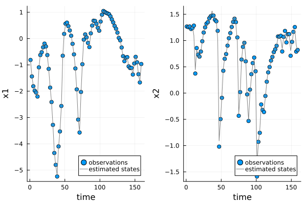

<!DOCTYPE html>
<html lang="en"><head><meta charset="UTF-8"/><meta name="viewport" content="width=device-width, initial-scale=1.0"/><title>Model performance · UniversalDiffEq.jl</title><meta name="title" content="Model performance · UniversalDiffEq.jl"/><meta property="og:title" content="Model performance · UniversalDiffEq.jl"/><meta property="twitter:title" content="Model performance · UniversalDiffEq.jl"/><meta name="description" content="Documentation for UniversalDiffEq.jl."/><meta property="og:description" content="Documentation for UniversalDiffEq.jl."/><meta property="twitter:description" content="Documentation for UniversalDiffEq.jl."/><script data-outdated-warner src="../assets/warner.js"></script><link href="https://cdnjs.cloudflare.com/ajax/libs/lato-font/3.0.0/css/lato-font.min.css" rel="stylesheet" type="text/css"/><link href="https://cdnjs.cloudflare.com/ajax/libs/juliamono/0.050/juliamono.min.css" rel="stylesheet" type="text/css"/><link href="https://cdnjs.cloudflare.com/ajax/libs/font-awesome/6.4.2/css/fontawesome.min.css" rel="stylesheet" type="text/css"/><link href="https://cdnjs.cloudflare.com/ajax/libs/font-awesome/6.4.2/css/solid.min.css" rel="stylesheet" type="text/css"/><link href="https://cdnjs.cloudflare.com/ajax/libs/font-awesome/6.4.2/css/brands.min.css" rel="stylesheet" type="text/css"/><link href="https://cdnjs.cloudflare.com/ajax/libs/KaTeX/0.16.8/katex.min.css" rel="stylesheet" type="text/css"/><script>documenterBaseURL=".."</script><script src="https://cdnjs.cloudflare.com/ajax/libs/require.js/2.3.6/require.min.js" data-main="../assets/documenter.js"></script><script src="../search_index.js"></script><script src="../siteinfo.js"></script><script src="../../versions.js"></script><link class="docs-theme-link" rel="stylesheet" type="text/css" href="../assets/themes/documenter-dark.css" data-theme-name="documenter-dark" data-theme-primary-dark/><link class="docs-theme-link" rel="stylesheet" type="text/css" href="../assets/themes/documenter-light.css" data-theme-name="documenter-light" data-theme-primary/><script src="../assets/themeswap.js"></script></head><body><div id="documenter"><nav class="docs-sidebar"><div class="docs-package-name"><span class="docs-autofit"><a href="../">UniversalDiffEq.jl</a></span></div><button class="docs-search-query input is-rounded is-small is-clickable my-2 mx-auto py-1 px-2" id="documenter-search-query">Search docs (Ctrl + /)</button><ul class="docs-menu"><li><a class="tocitem" href="../">UniversalDiffEq.jl</a></li><li><a class="tocitem" href="../Models/">Model Constructors</a></li><li><a class="tocitem" href="../EasyModels/">Easy NODE and UDE</a></li><li class="is-active"><a class="tocitem" href>Model performance</a><ul class="internal"><li><a class="tocitem" href="#Evaluating-model-fits-to-training-data"><span>Evaluating model fits to training data</span></a></li><li><a class="tocitem" href="#Model-forecasting-with-testing-data"><span>Model forecasting with testing data</span></a></li></ul></li><li><a class="tocitem" href="../NutsAndBolts/">UDE model construction</a></li><li><a class="tocitem" href="../MultipleTimeSeries/">Fitting a model to multiple time series</a></li><li><a class="tocitem" href="../modelanalysis/">Model analysis</a></li><li><a class="tocitem" href="../BayesianModels/">Bayesian Models</a></li><li><a class="tocitem" href="../examples/">Examples</a></li><li><a class="tocitem" href="../API/">API</a></li></ul><div class="docs-version-selector field has-addons"><div class="control"><span class="docs-label button is-static is-size-7">Version</span></div><div class="docs-selector control is-expanded"><div class="select is-fullwidth is-size-7"><select id="documenter-version-selector"></select></div></div></div></nav><div class="docs-main"><header class="docs-navbar"><a class="docs-sidebar-button docs-navbar-link fa-solid fa-bars is-hidden-desktop" id="documenter-sidebar-button" href="#"></a><nav class="breadcrumb"><ul class="is-hidden-mobile"><li class="is-active"><a href>Model performance</a></li></ul><ul class="is-hidden-tablet"><li class="is-active"><a href>Model performance</a></li></ul></nav><div class="docs-right"><a class="docs-navbar-link" href="https://github.com/Jack-H-Buckner/UniversalDiffEq.jl" title="View the repository on GitHub"><span class="docs-icon fa-brands"></span><span class="docs-label is-hidden-touch">GitHub</span></a><a class="docs-navbar-link" href="https://github.com/Jack-H-Buckner/UniversalDiffEq.jl/blob/main/docs/src/ModelTesting.md" title="Edit source on GitHub"><span class="docs-icon fa-solid"></span></a><a class="docs-settings-button docs-navbar-link fa-solid fa-gear" id="documenter-settings-button" href="#" title="Settings"></a><a class="docs-article-toggle-button fa-solid fa-chevron-up" id="documenter-article-toggle-button" href="javascript:;" title="Collapse all docstrings"></a></div></header><article class="content" id="documenter-page"><h1 id="Model-performance"><a class="docs-heading-anchor" href="#Model-performance">Model performance</a><a id="Model-performance-1"></a><a class="docs-heading-anchor-permalink" href="#Model-performance" title="Permalink"></a></h1><p>UniversalDiffEq.jl provides a number of functions to test the performance of NODE and UDE models on in-sample data. These tests validate the model fitting procedure. Functions to estimate the model&#39;s performance on out-of-sample data are discussed below and in the section on cross-validation.</p><h2 id="Evaluating-model-fits-to-training-data"><a class="docs-heading-anchor" href="#Evaluating-model-fits-to-training-data">Evaluating model fits to training data</a><a id="Evaluating-model-fits-to-training-data-1"></a><a class="docs-heading-anchor-permalink" href="#Evaluating-model-fits-to-training-data" title="Permalink"></a></h2><p>There are two primary functions to evaluate model fits: <code>plot_state_estimates</code> and <code>plot_predictions</code>. The training procedure used by UniversalDiffEq.jl simultaneously smooths the training data and trains the parameters of the UDE model on the smoothed dataset. The function <code>plot_state_estimates</code> compares the smoothed time series produced by the training procedure to the observations in the dataset. The smoothed time series (grey line) needs to capture the main trends in training data (blue dots) for the model to accurately recover the dynamics in the dataset (Fig. 1).</p><p></p><p><strong>Figure 1</strong>: Model fit to simulated training data</p><article class="docstring"><header><a class="docstring-article-toggle-button fa-solid fa-chevron-down" href="javascript:;" title="Collapse docstring"></a><a class="docstring-binding" id="UniversalDiffEq.plot_state_estimates-Tuple{UDE}-ModelTesting" href="#UniversalDiffEq.plot_state_estimates-Tuple{UDE}-ModelTesting"><code>UniversalDiffEq.plot_state_estimates</code></a> — <span class="docstring-category">Method</span></header><section><div><pre><code class="language-julia hljs">plot_state_estimates(UDE::UDE)</code></pre><p>Plots the values of the state variables estimated by the UDE model.</p></div><a class="docs-sourcelink" target="_blank" href="https://github.com/Jack-H-Buckner/UniversalDiffEq.jl/blob/bb8446b6b52ec831f06cd9bc8acc1c154ec134b3/src/ModelTesting.jl#L19-L23">source</a></section></article><p>We can make this analysis a bit more rigorous by looking for correlations in the observation errors using the <code>observation_error_correlations</code> function. This creates a lag plot for each pair of variables in the model and calculates the correlation coefficent. Large correlations in the observation errors suggest the UDE model may be missing predictable variation in the dataset.</p><article class="docstring"><header><a class="docstring-article-toggle-button fa-solid fa-chevron-down" href="javascript:;" title="Collapse docstring"></a><a class="docstring-binding" id="UniversalDiffEq.observation_error_correlations-Tuple{Any}-ModelTesting" href="#UniversalDiffEq.observation_error_correlations-Tuple{Any}-ModelTesting"><code>UniversalDiffEq.observation_error_correlations</code></a> — <span class="docstring-category">Method</span></header><section><div><pre><code class="language-julia hljs">observation_error_correlations(UDE)</code></pre><p>The first differnce plot of the observation errors <span>$psilon_t$</span>. This allows the user to check for autocorrelation in the observation errors.   </p></div><a class="docs-sourcelink" target="_blank" href="https://github.com/Jack-H-Buckner/UniversalDiffEq.jl/blob/bb8446b6b52ec831f06cd9bc8acc1c154ec134b3/src/ModelTesting.jl#L56-L60">source</a></section></article><p>The <code>plot_predictions</code>  functions compares the predictions of UDE model one step into the future to the estimated sequence of state variables. This function quantifies the predictive accuracy of the model for in-sample data.</p><article class="docstring"><header><a class="docstring-article-toggle-button fa-solid fa-chevron-down" href="javascript:;" title="Collapse docstring"></a><a class="docstring-binding" id="UniversalDiffEq.plot_predictions-Tuple{UDE}-ModelTesting" href="#UniversalDiffEq.plot_predictions-Tuple{UDE}-ModelTesting"><code>UniversalDiffEq.plot_predictions</code></a> — <span class="docstring-category">Method</span></header><section><div><pre><code class="language-julia hljs">plot_predictions(UDE::UDE)</code></pre><p>Plots the correspondence between the observed state transitions and the predictions from the UDE model.</p></div><a class="docs-sourcelink" target="_blank" href="https://github.com/Jack-H-Buckner/UniversalDiffEq.jl/blob/bb8446b6b52ec831f06cd9bc8acc1c154ec134b3/src/ModelTesting.jl#L270-L275">source</a></section></article><h2 id="Model-forecasting-with-testing-data"><a class="docs-heading-anchor" href="#Model-forecasting-with-testing-data">Model forecasting with testing data</a><a id="Model-forecasting-with-testing-data-1"></a><a class="docs-heading-anchor-permalink" href="#Model-forecasting-with-testing-data" title="Permalink"></a></h2><p>There are also functions to compare the model predictions to out-of-sample data. The simplest is <code>plot_forecast</code>, which compares the observations in the test dataset to a deterministic simulation from the dataset, which starts at the first observation and runs to the end of the test data.</p><article class="docstring"><header><a class="docstring-article-toggle-button fa-solid fa-chevron-down" href="javascript:;" title="Collapse docstring"></a><a class="docstring-binding" id="UniversalDiffEq.plot_forecast-Tuple{UDE, DataFrame}-ModelTesting" href="#UniversalDiffEq.plot_forecast-Tuple{UDE, DataFrame}-ModelTesting"><code>UniversalDiffEq.plot_forecast</code></a> — <span class="docstring-category">Method</span></header><section><div><pre><code class="language-julia hljs">plot_forecast(UDE::UDE, test_data::DataFrame)</code></pre><p>Plots the model&#39;s forecast over the range of the test data along with the value of the test data.</p></div><a class="docs-sourcelink" target="_blank" href="https://github.com/Jack-H-Buckner/UniversalDiffEq.jl/blob/bb8446b6b52ec831f06cd9bc8acc1c154ec134b3/src/ModelTesting.jl#L598-L602">source</a></section></article><p>It is also possible to test the performance of the models one time step into the future using the <code>plot_predictions</code> function. When a test dataset is supplied to the <code>plot_predictions</code> function, it will run a series of forecasts starting at each point in the dataset, predicting one time step into the future. The function returns a plot comparing the predicted and observed changes.</p><article class="docstring"><header><a class="docstring-article-toggle-button fa-solid fa-chevron-down" href="javascript:;" title="Collapse docstring"></a><a class="docstring-binding" id="UniversalDiffEq.plot_predictions-Tuple{UDE, DataFrame}-ModelTesting" href="#UniversalDiffEq.plot_predictions-Tuple{UDE, DataFrame}-ModelTesting"><code>UniversalDiffEq.plot_predictions</code></a> — <span class="docstring-category">Method</span></header><section><div><pre><code class="language-julia hljs">plot_predictions(UDE::UDE, test_data::DataFrame)</code></pre><p>Plots the correspondence between the observed state transitions in test data and the predictions from the UDE model.</p></div><a class="docs-sourcelink" target="_blank" href="https://github.com/Jack-H-Buckner/UniversalDiffEq.jl/blob/bb8446b6b52ec831f06cd9bc8acc1c154ec134b3/src/ModelTesting.jl#L334-L338">source</a></section></article></article><nav class="docs-footer"><a class="docs-footer-prevpage" href="../EasyModels/">« Easy NODE and UDE</a><a class="docs-footer-nextpage" href="../NutsAndBolts/">UDE model construction »</a><div class="flexbox-break"></div><p class="footer-message">Powered by <a href="https://github.com/JuliaDocs/Documenter.jl">Documenter.jl</a> and the <a href="https://julialang.org/">Julia Programming Language</a>.</p></nav></div><div class="modal" id="documenter-settings"><div class="modal-background"></div><div class="modal-card"><header class="modal-card-head"><p class="modal-card-title">Settings</p><button class="delete"></button></header><section class="modal-card-body"><p><label class="label">Theme</label><div class="select"><select id="documenter-themepicker"><option value="auto">Automatic (OS)</option><option value="documenter-light">documenter-light</option><option value="documenter-dark">documenter-dark</option></select></div></p><hr/><p>This document was generated with <a href="https://github.com/JuliaDocs/Documenter.jl">Documenter.jl</a> version 1.3.0 on <span class="colophon-date" title="Thursday 26 September 2024 01:01">Thursday 26 September 2024</span>. Using Julia version 1.7.3.</p></section><footer class="modal-card-foot"></footer></div></div></div></body></html>
